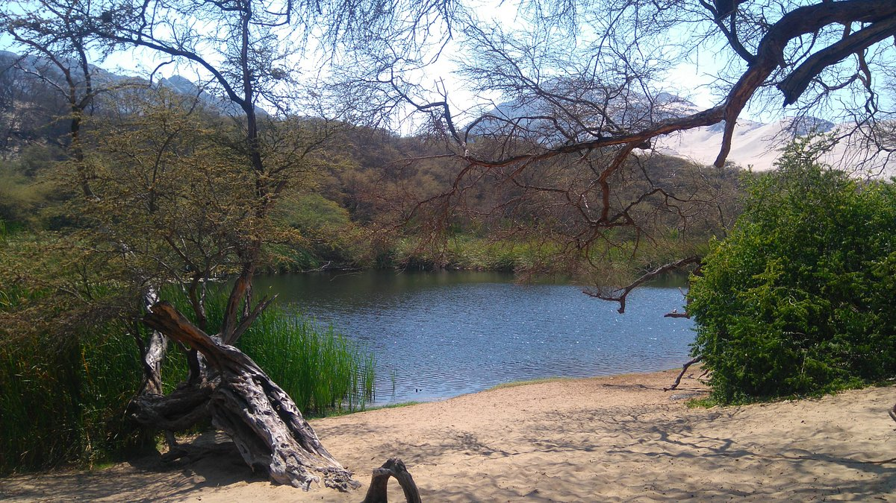
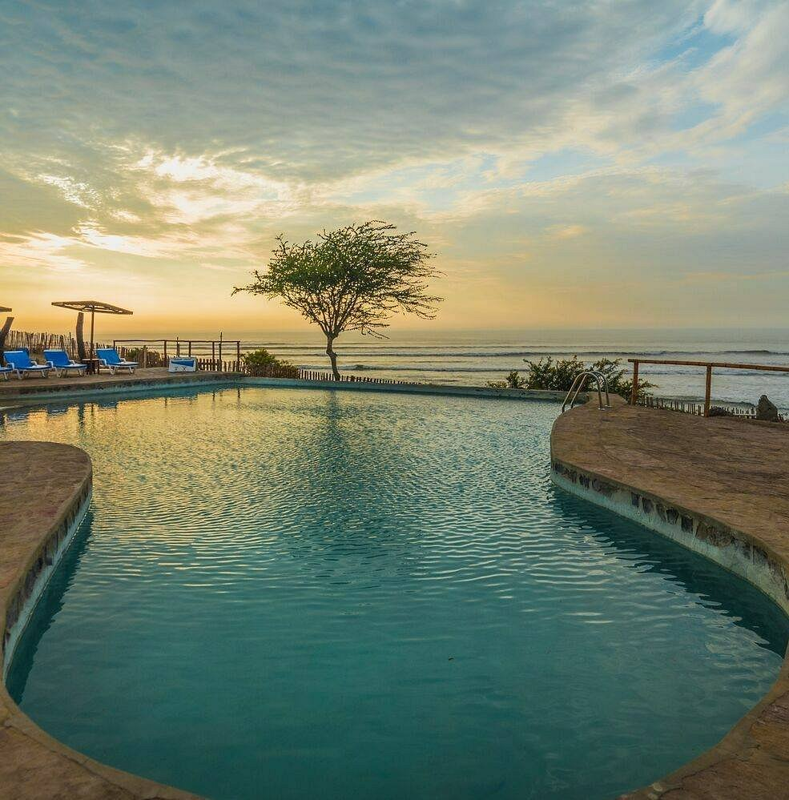
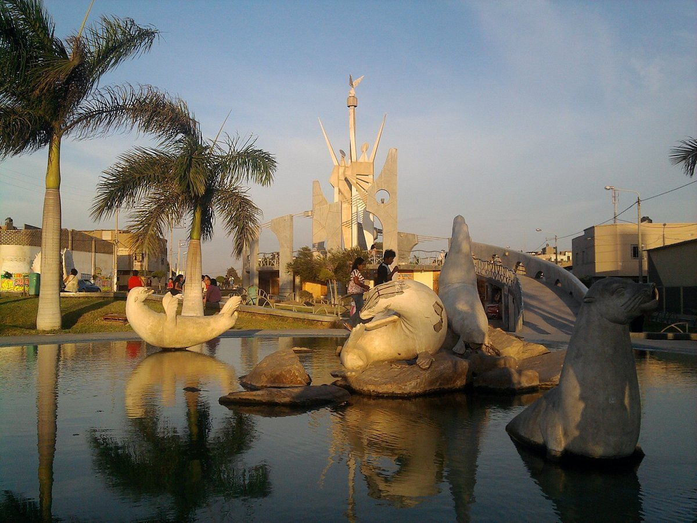

Restaurantes
La 49 cafe : Tiene pocos años de instalado, pero se ha logrado posicionar cómo la mejor sanguchería de Pacasmayo, por la calidad de sus productos y el esmero que le pone Coqui de la Fuente y su esposa Atiende principalmente en el desayuno y en la noche. El sanguche de asado y de jamón son mis preferidos, especialmente el primero. Su local es pequeño, pero muy acogedor. Creo que tiene para largo en Pacasmayo.
El Hotel Central Pacasmayo
Se encuentra en Pacasmayo y ofrece alojamiento con bar y terraza. Cuenta con recepción 24 horas, salón compartido y WiFi gratuita en todas las instalaciones. Algunos alojamientos tienen balcón con vistas a la ciudad, turista S/100
Vuelos
Jorge Chavez:
Lima, PE (LIM) Trujillo, PE (TRU)
mar, 20/9 - mar, 27/9
JetSmart: ida y vuelta, turista
S/ 207
¿Que hacer en Pacasmayo?
puemape:
si te gusta la arena hay una zona con mucha arena y si deseas pescar también hay una zona rocosa para ello, gran cantidad de restaurantes en la zona, lo recomiendo, a 20 minutos de San Pedro de Lloc en Pacasmayo.
Alquileres
Casa Privada Estreno, con cochera privada y la tranquilidad, descanso y seguridad que buscas en tus viajes. Sala comedor, amplia cocina con comedor de diario, lavandería con mampara de vidrio, 03 dormitorios con camas de 02 plazas (un dormitorio con baño privado). Acondicionado con muebles y equipos nuevos, amplios ventanales y luminosidad en todos los ambientes, ubicada en Urbanización Palmas del Golf. Chepén a 2 cuadras del parque infantil, espaldas ESSALUD ( Frente a Ladrillera).
Saber precio
Nosotros
esta plataforma fue creada para la informacion de este lindo pueblo llamado Pacasmayo que se encuentra en la libertad

bosque el canoncillo
es un lago muy minimalista y hermoso

Faro adventure resort
este hospedaje es uno de los mas top en Pacasmayo

parque paseo de la paz
este parque es llamado asi porque es relajante , con brisa suave